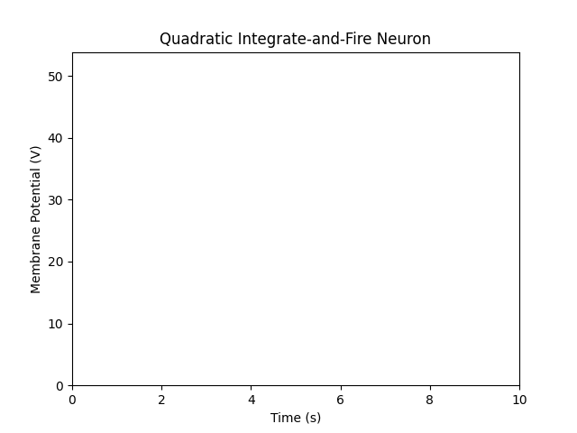

The Hodgkin–Huxley model can be simplified into various 1-D systems (and 2-D and 3-D, as it is originally a 4-D system). Even in the 1-D case, we can identify four fundamental models: one for each combination of activation vs. inactivation gating and inward vs. outward current.
The typical choice for preliminary analysis is the so-called Leak + Instantaneous Sodium Model, often referred to as the persistent sodium model. In this model, we consider \(p\) as a single activation gate variable (as opposed to the 4-D Hodgkin–Huxley model with three gating variables).
Essentially, this captures the voltage dynamics for a neuron with only one type of channel (sodium channel) and with only one activation gate. The model also has a leaky outward current (typically representing potassium \(K^+\)). The sodium current here is persistent, meaning that once activated, it has no inactivation mechanism— it continues to flow indefinitely.
To simplify, we assume the gating variable \(p\) responds much faster than voltage dynamics, and thus treat it as instantaneous:
Substituting:
Considering sodium specifically, we write:
With
Substituting numerical values:
No analytic solution exists for this nonlinear ODE, so we proceed with qualitative analysis.
Fixed Point Analysis
Fixed points satisfy \(\dot{V} = 0\):
Numerically, this yields three fixed points: \(x_1 \approx -52.51,\; x_2 \approx -41.51,\; x_3 \approx 30.95\).
The first and third are stable equilibria (rest and excited states), separated by the unstable threshold \(x_2\).

Bifurcation Analysis
Varying the input current \(I\) alters stability. At \(I=16\), the two leftmost fixed points merge and annihilate in a saddle-node bifurcation.
Hartman–Grobman Theorem
Locally, near a hyperbolic fixed point \(V_{eq}\), the system
is topologically equivalent to
Topological Normal Form
For a saddle-node bifurcation, the normal form is:
This is the Quadratic Integrate-and-Fire Neuron.
Simulations
Numerical experiments reveal regimes depending on \(I\):
I < 0
Two equilibria at \(\pm\sqrt{|I|}\). Resetting just above threshold induces tonic spiking:
I = 0
Single equilibrium at \(0\). Dynamics depend on reset value:
I > 0
No equilibria. All trajectories spike repetitively:
These cover the main dynamical properties of the Quadratic Integrate-and-Fire Neuron.